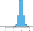
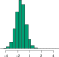
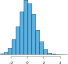

Week 9: Generative vs. Discriminative Models
DSAN 5300: Statistical Learning
Spring 2025, Georgetown University
Monday, March 17, 2025
Decision Boundaries
The boundary between two classes \(k\) and \(k'\) will be the point at which \(\delta_k(x) = \delta_{k'}(x)\)
For two classes, can solve \(\delta_0(x) = \delta_1(x)\) for \(x\) to obtain \(x = \frac{\mu_0 + \mu_1}{2}\)
To derive a boundary from data: \(x = \frac{\widehat{\mu}_0 + \widehat{\mu}_1}{2}\) \(\Rightarrow\) Predict \(1\) if \(x > \frac{\widehat{\mu}_0 + \widehat{\mu}_1}{2}\), \(0\) otherwise

ISLR Figure 4.4: Estimating the Decision Boundary from data. The dashed line is the “true” boundary \(x = \frac{\mu_0 + \mu_1}{2}\), while the solid line in the right panel is the boundary estimated from data as \(x = \frac{\widehat{\mu}_0 + \widehat{\mu}_1}{2}\).
LDA with Multiple Features (Here \(p = 2\))
- Within each class \(k\), values of \(\mathbf{x}\) are (multivariate) normally distributed:
\[ \left( \begin{bmatrix}X_1 \\ X_2\end{bmatrix} \middle| ~ Y = k \right) \sim \mathbf{\mathcal{N}}_2(\param{\boldsymbol\mu_k}, \param{\mathbf{\Sigma}}) \]
- Increasing \(p\) to 2 and \(K\) to 3 means more parameters, but still linear boundaries. It turns out: shared variance (\(\sigma^2\) or \(\mathbf{\Sigma}\)) will always produce linear boundaries 🤔

ISLR Figure 4.6: Like before, dashed lines are “true” boundaries while solid lines are boundaries estimated from data
Quadratic Class Boundaries
- To achieve non-linear boundaries, estimate covariance matrix \(\mathbf{\Sigma}_k\) for each class \(k\):
\[ \left( \begin{bmatrix}X_1 \\ X_2\end{bmatrix} \middle| ~ Y = k \right) \sim \mathbf{\mathcal{N}}_2(\param{\boldsymbol\mu_k}, \param{\mathbf{\Sigma}_k}) \]
- Pros: Non-linear class boundaries! Cons: More parameters to estimate, does worse than LDA if data linearly-separable (or nearly linearly-separable).
- Deciding factor: do you think DGP produces normal classes with same variance?

ISLR Figure 4.9: Dashed purple line is “true” boundary (Bayes decision boundary), dotted black line is LDA boundary, solid green line is QDA boundary
Key Advantage of Generative Model
- You get an actual “picture” of what the data looks like!
| \(\widehat{f}_k(X_1)\) | \(\widehat{f}_k(X_2)\) | \(\widehat{f}_k(X_3)\) | |
| \(k = 1\) |  |
 |  |
| \(k = 2\) |  |  |
Classifying New Points
- For new feature values \(x_{ij}\), compare how likely this value is under \(k = 1\) vs. \(k = 2\)
- Example: \(\mathbf{x} = (0.4, 1.5, 1)^{\top}\)
| \(\widehat{f}_k(X_1)\) | \(\widehat{f}_k(X_2)\) | \(\widehat{f}_k(X_3)\) | |
| \(k = 1\) | |
|
|
| \(f_1(0.4) = 0.368\) | \(f_1(1.5) = 0.484\) | \(f_1(1) = 0.226\) | |
| \(k = 2\) | |||
| \(f_2(0.4) = 0.030\) | \(f_2(1.5) = 0.130\) | \(f_2(1) = 0.616\) |